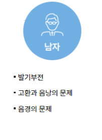
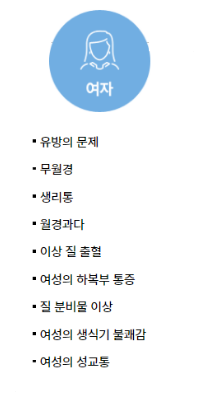
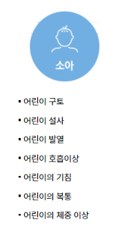

COBI
Q&A
병원,약국찾기
카드뉴스
Dropdown
coomingsonn
Not ready
Something else here
Disabled
Search
Log In
Log In
×
Log In with Google
Log In with E-mail
Sign up E-mail
자가 진단 서비스
정확한 증세는 아닙니다. 병원진료 바랍니다.
자가진단은 사용자 스스로 건강진단을 할 수 있는 항목들과
결과에 대한 건강 콘텐츠를 통해 건강실천사항을 제공하고 있습니다.
첫 화면으로 가기
일반적인 증상
ㆍ불편감
ㆍ얼굴통증
ㆍ인후통(목의 통증)
ㆍ변비
ㆍ피로감
ㆍ언어 장애
ㆍ목성과 목소리 소실
ㆍ흉통
ㆍ체중감소
ㆍ건망증과 혼돈
ㆍ기침
ㆍ가슴 두근거림
ㆍ체중증가
ㆍ우을증
ㆍ가쁜 호흡
ㆍ배뇨 조절 곤란
ㆍ수면 장애
ㆍ불안감
ㆍ천명음
ㆍ빈뇨
ㆍ열
ㆍ가려움증
ㆍ삼키기 장애
ㆍ배뇨통
ㆍ과도한 땀 흘림
ㆍ전반적인 피부문제
ㆍ구토
ㆍ요통


